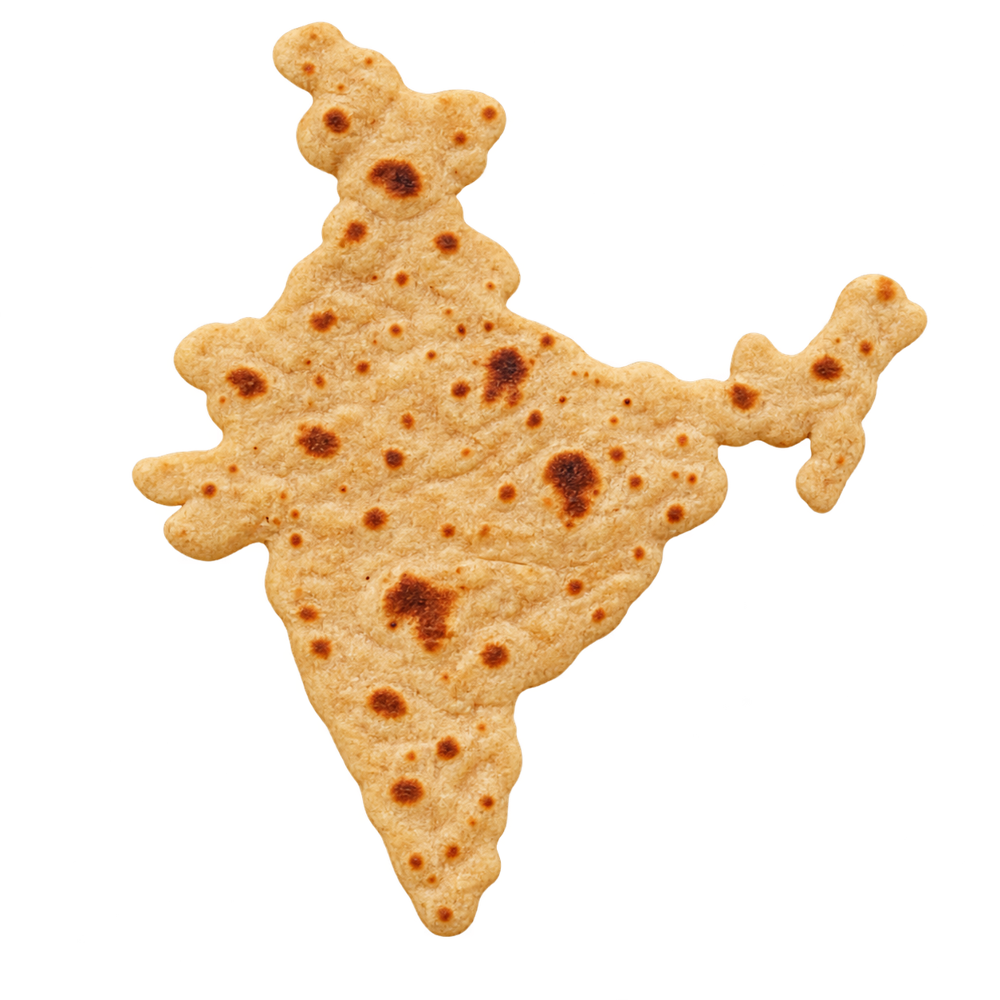

Upload chapati
Take a quick snap or drag in a photo of your slightly shameful bread creation.

A completely unnecessary culinary atlas
Upload a deformed or deeply suspicious flatbread and we’ll compare its outline to a nation-state. Very little science. Immense confidence.
JPG, PNG, or a quick snap from your camera
Absolutely no practical value. Probably.
It’s not science. It’s theatre.
Take a quick snap or drag in a photo of your slightly shameful bread creation.
We isolate the doughy silhouette and look for those suspicious little corner bulges.
Then we match the shape against a few very serious, very fictional geographic patterns.
Finally, learn whether your chapati is legally eligible to become a map of Italy.